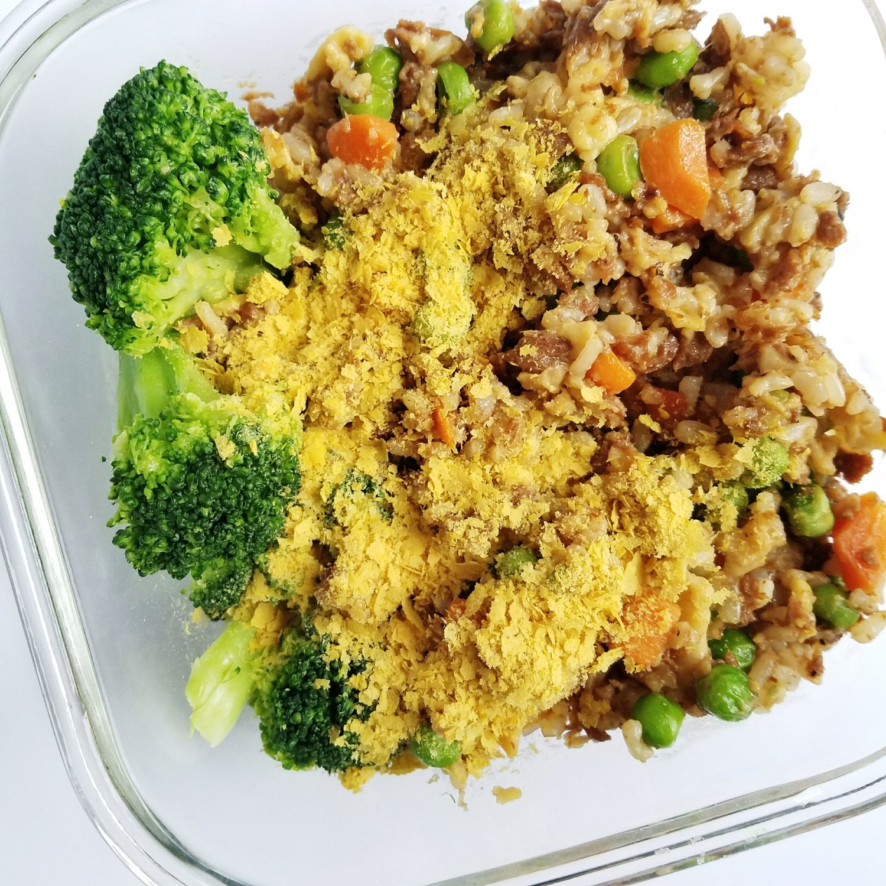

Vegan Tuna Fried Rice (gf)


I bet you never imagined you could enjoy vegan tuna fried rice, huh? This simple, 7-ingredient recipe yields a satisfying meat-free version of the enormously favorite Chinese classic. This dish is also gluten free, dairy free, and oil free.
Fried rice is pretty awesome. You get to enjoy the amazingness of rice, while also getting veggies sorta kinda not really. The veggies are there...but really they're an afterthought. The main star here is the rice. It's flavorful, aromatic, and best of all - easy. Just throw things in a pan and go!
Because of that, this recipe is pretty versatile. If you don't want to use vegan tuna, you can definitely sub it out for another protein source such as seitan, tofu, TVP, you name it! I really enjoyed the flavors that the vegan tuna brought to this recipe, but ultimately the protein source is trivial.
I made this as a portion of my lunch meal prep for a week, but this would also be fit to serve two people as an entrée. It's great topped with nutritional yeast, by the way. If you make this gluten free, oil free, vegan tuna fried rice, let me know! I love when you share reviews and pictures with me!
Vegan Tuna Fried Rice
Serves: 4
-
1/2 cup brown rice, dry
-
1 garlic clove, minced
-
6 TBSP vegan egg powder (mixed in 1 cup cold water)
-
1 bag frozen peas/carrots blend (approx. 2-2.5 cups)
-
1 can vegan "tuna" (drained)
-
3 TBSP tamari (or soy sauce)
-
salt and pepper, to taste
Cook the rice as instructed by its packaging. Spray a large skillet with nonstick spray, and sautee the garlic on a medium heat for 1-2 minutes. Then add the veganegg liquid and frozen vegetables. Let this cook for 7-8 minutes as you would with non-vegan scrambled eggs. Once scrambled, add the cooked brown rice, "tuna", tamari, and salt/pepper. Reduce the heat of the stovetop and let the dish cook on low for 1-2 minutes, continuously stirring in order to evenly mix ingredients together. Remove from skillet, and serve!